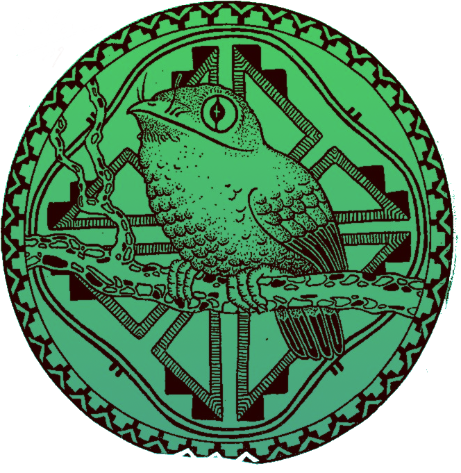

Projeto brasileiro de verdade
É o Projeto Tincuã🦜
Projeto brasileiro de verdade
É o Projeto Tincuã🦜
Conheça sobre o Projeto Tincuã.
O Projeto Tincuã é ebsite desenvolvido para o evento “Momentos Poéticos” do Colégio Guilherme de Almeida, transmite, de forma didática e interativa, conceitos acerca do autor Mário de Andrade (1893 – 1945), de sua obra, Macunaíma (1928), e do movimento que participou, a semana de arte moderna de 1922. Por meio da navegação no website, o internauta terá acesso a diversos materiais (como a obra Macunaíma em PDF) e conhecimentos acerca dos conceitos (básicos e/ou avançados) acima mencionados.
Os membros do grupo são:
Programador/DEV: Felipe Mascarenhas Maronezi;
Organizador: Carlos Eduardo Almeida Andrade;
Escritora/Revisora: Ana Clara Guimarães Martins;
Escritora/Revisora: Lívia Viana Castilho.
Conheça um pouco sobre a obra Macunaíma
O herói da nossa gente!
Macunaíma, livro escrito por Mário de Andrade, um dos maiores modernistas do Brasil. A obra é uma rapsódia que mescla mitos e lendas indigenas com a história do herói sem nenhum caráter que representa o nosso povo.
A história possui um caráter épico, e é considerada uma rapsódia ou seja, uma obra literária que absorve todas as tradições orais e folclóricas de um povo. Segundo o próprio autor, Mário de Andrade, “Este livro afinal não passa duma antologia do folclore brasileiro”.
Autor: Mário de Andrade;
Idioma: Português;
Primeiro esboço: 1926;
Lançamento: 1928;
Páginas: 282 (1º edição).
Clique no botão abaixo e tenha acesso gratuito ao PDF desta grande obra:
> Baixar PDF
Conheça um pouco sobre Mário de Andrade
O autor da nossa gente!
Mário de Andrade, um poeta, romancista, contista, crítico literário, folclorista, professor e pesquisador de manifestações musicais. Interessava-se por tudo aquilo que dissesse respeito ao seu país e teve papel importante na implantação do Modernismo no Brasil, tornando-se a figura mais importante da Geração de 22.
Nome completo: Mário Raul Moraes de Andrade;
Nascimento: 9 de outubro de 1893. São Paulo, SP;
Morte: 25 de fevereiro de 1945 (51 anos). São Paulo, SP;
Prêmios: Ordem do Mérito Cultural (2006);
Magnum opus : Macunaíma;
Alma mater : Conservatório Dramático e Musical de São Paulo.
Clique no botão abaixo e tenha acesso ao PDF de uma rápida pesquisa sobre este autor:
> Pesquisa - Mário de Andrade
Conheça um pouco sobre a Semana de Arte Moderna
O evento da nossa gente!
Ocorrida no Teatro Municipal de São Paulo, a semana de arte moderna sintetiza-se em um encontro de novas ideias e conceitos estéticos que revolucionaram a arte e literatura brasileira. Ou seja, representou uma tentativa de renovação da linguagem artística e cultural, na busca de experimentação, na liberdade criadora e na ruptura com o passado.
Data: 13 - 17 de fevereiro de 1922;
Localização: Teatro Municipal, São Paulo, Brasil;
Outro nome: Semana de 22;
Resultado: Início da consolidação do modernismo no Brasil e ruptura com movimentos anteriores.
Clique no botão abaixo e tenha acesso ao PDF de uma pesquisa sobre os cabeças deste movimento:
> Pesquisa - Semana de 22